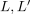
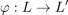
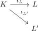
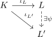
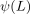
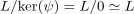
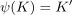

uniqueness up to non-canonical isomorphism of an algebraic closure
1. Satz
Sei  ein Körper und
ein Körper und

algebraische Abschlüsse von.
Dann existiert ein i.A. nicht kanonischer Körperisomorphismus

2. Beweis
Seien

gegeben.
Dann existiert nach dem Fortsetzungssatz für Körpererweiterungen ein (nicht kanonischer) ring-homomorphismus 

Dann ist

ein Unterkörper (vgl. Bild eines Körper als Unterkörper) und nach Homomorphiesatz für Ringe iso zu
(vgl. Bild eines Körper als Unterkörper, Körperhomomomorphismus als Monomorphismus) Damit ist algebraisch abgeschlossen und wegen der minimalität (vgl. algebraischer abschluss als minimal algebraisch abgeschlossener Körper) gilt
Damit ist ein körper-isomorphismus
Alternativ: